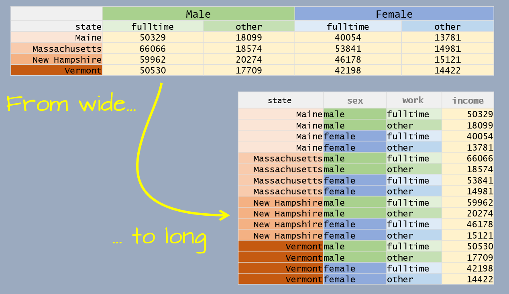

Tidying/reshaping tables using tidyr
| tidyr |
|---|
| 1.1.4 |
Introduction
Data tables come in different sizes and shape; they can be a very simple two column dataset or they can consist of many columns and “sub-columns”. Understanding its structure, and learning how to reshape it into a workable form is critical to an effective and error free analysis.
For example, a median earnings data table downloaded from the U.S. census bureau’s website might look something like this:

We are conditioned to think of a table as consisting of three components: rows, columns and data values. Implicit in this paradigm is that each column represents a unique attribute. However, this may not always be the case. For example, in the above table, each column represents two distinct variables: gender and educational attainment (two distinct sets of attributes).

Another way of describing a dataset is by defining its variable(s), values and observations. In the above example, we have four variables: gender, education, region and income. Each variable consists of either categorical values (e.g. region, gender and education) or numerical values (income).
An observation consists of a unique set of attribute values. For example the values West Region, Female, Graduate and $57,914 make up one observation: there is just one instance of these combined values in the data. This perspective affords us another option in presenting the dataset: we can assign each column its own variable, and each row its own observation.

Note that each row of the table is part of a unique set of variable attributes. A dataset in this format may not be human “readable” (unlike its wide counterpart), but is the format of choice for many data analysis and visualization operations.
The next sections will demonstrate how one can convert a wide format to a long format and vice versa.
Wide and long table formats
A 2014 Boston (Logan airport) flight data summary table will be used in this exercise. The summary displays average mean delay time (in minutes) by day of the work week and quarter.
df <- data.frame( Weekday = c( "Mon", "Tues", "Wed", "Thurs", "Fri" ),
Q1 = c( 9.9 , 4.9 , 8.8 , 12.2 , 12.2 ),
Q2 = c( 5.4 , 9.7 , 11.1 , 10.2 , 8.1 ),
Q3 = c( 8.8 , 7.9 , 10.2 , 9.2 , 7.9 ),
Q4 = c( 6.9 , 5 , 9.3 , 9.7 , 5.6 ) )Reshaping a table involves modifying its layout (or “shape”). In our example, df is in a “wide” format.
df Weekday Q1 Q2 Q3 Q4
1 Mon 9.9 5.4 8.8 6.9
2 Tues 4.9 9.7 7.9 5.0
3 Wed 8.8 11.1 10.2 9.3
4 Thurs 12.2 10.2 9.2 9.7
5 Fri 12.2 8.1 7.9 5.6There are three unique variables: day of week, quarter of year, and mean departure delay.
Creating a long table from a wide table
A package that facilitates converting from wide to long (and vice versa) is tidyr. To go from wide to long we use the pivot_longer function. Note that if you are using a version of tidyr older than 1.0 you will want to use the gather() function..
The pivot_longer function takes three arguments:
cols: list of columns that are to be collapsed. The columns can be referenced by column number or column name.names_to: This is the name of the new column which will combine all column names (e.g.Q1,Q2,Q3andQ4).values_to: This is the name of the new column which will combine all column values (e.g. average delay times) associated with each variable combination.
In our example, the line of code needed to re-express the table into a long form can be written in at least one of four ways:
library(tidyr)
df.long <- pivot_longer(df, cols=2:5, names_to = "Quarter", values_to = "Delay")
# or
df.long <- pivot_longer(df, cols=-1, names_to = "Quarter", values_to = "Delay")
# or
df.long <- pivot_longer(df, cols=Q1:Q4, names_to = "Quarter", values_to = "Delay")
# or
df.long <- pivot_longer(df, cols=c(Q1,Q2,Q3,Q4), names_to = "Quarter", values_to = "Delay")All four lines produce the same output, they differ only by how we are referencing the columns that are to be collapsed. Note that we assigned the names Quarter and Delay to the two new columns.
The first 10 lines of the output table are shown here. Note how each Delay value has its own row.
Weekday Quarter Delay
1 Mon Q1 9.9
2 Tues Q1 4.9
3 Wed Q1 8.8
4 Thurs Q1 12.2
5 Fri Q1 12.2
6 Mon Q2 5.4
7 Tues Q2 9.7
8 Wed Q2 11.1
9 Thurs Q2 10.2
10 Fri Q2 8.1The following figure summarizes the wide to long conversion.

Creating a wide table from a long table
If a table is to be used for a visual assessment of the values, a long format may be difficult to work with. A long table can be re-expressed into a wide form by picking the two variables that will define the new column names and values.
Continuing with our example, we will convert df.long back to a wide format using the pivot_wider() function. This replaces the spread() function from earlier versions of tidyr (<1.0). The pivot_wider() function takes at least two arguments:
names_from: Variable whose values will be converted to column names.values_from: Variable whose values will populate the table’s block of cell values.
df.wide <- pivot_wider(df.long, names_from = Quarter, values_from = Delay) We’ve now recreated the wide version of our table.
# A tibble: 5 x 5
Weekday Q1 Q2 Q3 Q4
<chr> <dbl> <dbl> <dbl> <dbl>
1 Mon 9.9 5.4 8.8 6.9
2 Tues 4.9 9.7 7.9 5
3 Wed 8.8 11.1 10.2 9.3
4 Thurs 12.2 10.2 9.2 9.7
5 Fri 12.2 8.1 7.9 5.6The following figure summarizes the long to wide conversion.

Advanced pivot_longer options
Here’s a subset of median income by sex and by work experience for 2017.
df2 <- data.frame(state = c("Maine", "Massachusetts",
"New Hampshire", "Vermont"),
male_fulltime = c(50329,66066, 59962, 50530),
male_other = c(18099, 18574, 20274, 17709),
female_fulltime = c(40054, 53841, 46178, 42198),
female_other = c(13781, 14981, 15121, 14422))
df2 state male_fulltime male_other female_fulltime female_other
1 Maine 50329 18099 40054 13781
2 Massachusetts 66066 18574 53841 14981
3 New Hampshire 59962 20274 46178 15121
4 Vermont 50530 17709 42198 14422At first glance, it might seem that we have three variables as in the earlier example, but upon closer examination, we see that we can tease out two variables from the column names: sex (male and female) and work experience (fulltime and other).

pivot_longer has an argument, names_sep, that is passed the character that is used to delimit the two variable values. In our example, this character is _. Since the column values will be split across two variables we will also need to pass two column names to the names_to argument.

df2.long <- pivot_longer(df2, cols = -state,
names_to = c("sex","work"),
names_sep = "_",
values_to = "income")
df2.long# A tibble: 16 x 4
state sex work income
<chr> <chr> <chr> <dbl>
1 Maine male fulltime 50329
2 Maine male other 18099
3 Maine female fulltime 40054
4 Maine female other 13781
5 Massachusetts male fulltime 66066
6 Massachusetts male other 18574
7 Massachusetts female fulltime 53841
8 Massachusetts female other 14981
9 New Hampshire male fulltime 59962
10 New Hampshire male other 20274
11 New Hampshire female fulltime 46178
12 New Hampshire female other 15121
13 Vermont male fulltime 50530
14 Vermont male other 17709
15 Vermont female fulltime 42198
16 Vermont female other 14422Advanced pivot_wider options
Combining variable names when spreading
Continuing with the df2.long dataframe, we can spread the long table back to a wide table while combining the sex and work variables. We’ll add the names_sep argument which defines the character to use to separate the two variable names. We’ll use a dot . separator in this example.
pivot_wider(df2.long,
names_from = c(sex,work),
values_from = income,
names_sep = ".")# A tibble: 4 x 5
state male.fulltime male.other female.fulltime female.other
<chr> <dbl> <dbl> <dbl> <dbl>
1 Maine 50329 18099 40054 13781
2 Massachusetts 66066 18574 53841 14981
3 New Hampshire 59962 20274 46178 15121
4 Vermont 50530 17709 42198 14422Spreading duplicate variable combinations
If your long table has more than one unique combination of variables, pivot_wider() will return a list. Note that if you have used the older version of tidyr (version <1.0) its spread() function would have returned an error.
df3 <- data.frame(var1 = c("a", "a", "b", "b"),
var2 = c("x", "x", "y", "y"),
val = c(5,3,1,4))
df3 var1 var2 val
1 a x 5
2 a x 3
3 b y 1
4 b y 4pivot_wider(df3, names_from = var2, values_from = val)# A tibble: 2 x 3
var1 x y
<chr> <list> <list>
1 a <dbl [2]> <NULL>
2 b <NULL> <dbl [2]>Since the intersections of a:x and b:y each have two possible values, the function returns a list of values. Assuming that the duplicate records are not an erroneous entry, you will need to instruct the function on how to summarize the multiple values using the values_fn argument. For example, to return the maximum value, type:
pivot_wider(df3,
names_from = var2,
values_from = val,
values_fn = list(val = min))# A tibble: 2 x 3
var1 x y
<chr> <dbl> <dbl>
1 a 3 NA
2 b NA 1You’ll note the empty cells resulting from there not being a valid combination for a:y and b:x. You can specify the missing values using the values_fill argument. For example, to replace NA with 0 type:
pivot_wider(df3, names_from = var2, values_from = val,
values_fn = list(val = min),
values_fill = list(val = 0))# A tibble: 2 x 3
var1 x y
<chr> <dbl> <dbl>
1 a 3 0
2 b 0 1Additional manipulation options
The tidyr package offers other functions not directly tied to pivoting. Some of these functions are highlihghted next.
Separating elements in one column into separate columns
To split a column into two or more columns based on a existing column’s delimited value, use the separate() function.
# Let's first create a delimited table
df2.long <- pivot_longer(df2, cols = -1,
names_to = "var1",
values_to = "income")
df2.long# A tibble: 16 x 3
state var1 income
<chr> <chr> <dbl>
1 Maine male_fulltime 50329
2 Maine male_other 18099
3 Maine female_fulltime 40054
4 Maine female_other 13781
5 Massachusetts male_fulltime 66066
6 Massachusetts male_other 18574
7 Massachusetts female_fulltime 53841
8 Massachusetts female_other 14981
9 New Hampshire male_fulltime 59962
10 New Hampshire male_other 20274
11 New Hampshire female_fulltime 46178
12 New Hampshire female_other 15121
13 Vermont male_fulltime 50530
14 Vermont male_other 17709
15 Vermont female_fulltime 42198
16 Vermont female_other 14422# Split var1 column into two columns
df2.sep <- separate(df2.long,
col = var1,
sep = "_",
into = c("sex", "work"))
df2.sep# A tibble: 16 x 4
state sex work income
<chr> <chr> <chr> <dbl>
1 Maine male fulltime 50329
2 Maine male other 18099
3 Maine female fulltime 40054
4 Maine female other 13781
5 Massachusetts male fulltime 66066
6 Massachusetts male other 18574
7 Massachusetts female fulltime 53841
8 Massachusetts female other 14981
9 New Hampshire male fulltime 59962
10 New Hampshire male other 20274
11 New Hampshire female fulltime 46178
12 New Hampshire female other 15121
13 Vermont male fulltime 50530
14 Vermont male other 17709
15 Vermont female fulltime 42198
16 Vermont female other 14422Splitting rows into multiple rows based on delimited values
To split delimited values across rows, use the separate_rows function.
separate_rows(df2.long, var1, sep = "_")# A tibble: 32 x 3
state var1 income
<chr> <chr> <dbl>
1 Maine male 50329
2 Maine fulltime 50329
3 Maine male 18099
4 Maine other 18099
5 Maine female 40054
6 Maine fulltime 40054
7 Maine female 13781
8 Maine other 13781
9 Massachusetts male 66066
10 Massachusetts fulltime 66066
# ... with 22 more rowsNote that the output is a tibble even if the input is a dataframe.
Replicate rows by count
You can expand rows based on a count column using the uncount() function. This is the opposite of a group_by(...) %>% count() operation that tallies up the observations based on a grouping variable. Here, we’ll replicate rows based on the column count value.
df2b <- data.frame(var1 = c("a", "b"),
var2 = c("x", "y"),
count = c(1, 3))
df2b var1 var2 count
1 a x 1
2 b y 3uncount(df2b, count) var1 var2
1 a x
2 b y
3 b y
4 b yIf you want to add an index column that identifies the replicated rows, add an .id argument.
uncount(df2b, count, .id = "id") var1 var2 id
1 a x 1
2 b y 1
3 b y 2
4 b y 3Combining elements from many columns into a single column
Another practical function in the tidyr package is unite(). It combines columns into a single column by chaining the contents of the combined columns. For example, the following table has hours, minutes and seconds in separate columns.
df <- data.frame(
Index = c(1, 2, 3),
Hour = c(2, 14, 20),
Min = c(34, 2, 55),
Sec = c(55, 17, 23))
df Index Hour Min Sec
1 1 2 34 55
2 2 14 2 17
3 3 20 55 23To combine the three time elements into a single column, type:
df2 <- unite(df, col = Time, c(Hour, Min, Sec) , sep=":", remove =TRUE)
df2 Index Time
1 1 2:34:55
2 2 14:2:17
3 3 20:55:23The col parameter defines the new column name; the parameter c(Hour, Min, Sec) defines the columns to be combined into column Time; sep=":" tells the function what characters are to be used to separate the elements (here, we are separating the time elements using :); remove=TRUE tells the function to remove columns two through four.
Creating unique combinations of variable values
You can use expand_grid to automatically generate a table with unique combinations of a set of variable values. For example, to fill a table with a combination of student names and homework assignments, type:
df3.long <- expand_grid(
student = c("Joe", "Jane", "Kim"), # Define all unique student names
assignment = c(paste0("HW", 1:4)), # Define all unique HW assignments
value = NA)
df3.long# A tibble: 12 x 3
student assignment value
<chr> <chr> <lgl>
1 Joe HW1 NA
2 Joe HW2 NA
3 Joe HW3 NA
4 Joe HW4 NA
5 Jane HW1 NA
6 Jane HW2 NA
7 Jane HW3 NA
8 Jane HW4 NA
9 Kim HW1 NA
10 Kim HW2 NA
11 Kim HW3 NA
12 Kim HW4 NA We can then create a wide version of the table using pivot_wider.
pivot_wider(df3.long, names_from = assignment, values_from = value)# A tibble: 3 x 5
student HW1 HW2 HW3 HW4
<chr> <lgl> <lgl> <lgl> <lgl>
1 Joe NA NA NA NA
2 Jane NA NA NA NA
3 Kim NA NA NA NA Filling gaps in a table with NA
It’s not uncommon to be handed a table with incomplete combinations of observations. For example, the following table gives us yield and data source values for each combination of year and grain type. However, several combinations of year/grain are missing.
df4.long <- data.frame( Year = c(1999,1999,2000,2000,2001,2003,2003,2005),
Grain = c("Oats", "Corn","Oats", "Corn","Oats", "Oats", "Corn","Oats"),
Yield = c(23,45,24,40,20,19,41,22),
Src = c("a","a","b","c","a","a","c","a"),
stringsAsFactors = FALSE)
df4.long Year Grain Yield Src
1 1999 Oats 23 a
2 1999 Corn 45 a
3 2000 Oats 24 b
4 2000 Corn 40 c
5 2001 Oats 20 a
6 2003 Oats 19 a
7 2003 Corn 41 c
8 2005 Oats 22 aWe are missing records for 2001 and Corn, 2003 and Corn, and data for both grains are missing for 2002 and 2004. To add rows for all missing pairs of year/grain values, use the complete function. Here, we’ll assign 0 to missing Yield values and NA to the Src values.
df.all <- complete(df4.long, Year=1999:2005, Grain= c("Oats", "Corn"),
fill = list(Yield = 0, Src = NA))
df.all# A tibble: 14 x 4
Year Grain Yield Src
<dbl> <chr> <dbl> <chr>
1 1999 Corn 45 a
2 1999 Oats 23 a
3 2000 Corn 40 c
4 2000 Oats 24 b
5 2001 Corn 0 <NA>
6 2001 Oats 20 a
7 2002 Corn 0 <NA>
8 2002 Oats 0 <NA>
9 2003 Corn 41 c
10 2003 Oats 19 a
11 2004 Corn 0 <NA>
12 2004 Oats 0 <NA>
13 2005 Corn 0 <NA>
14 2005 Oats 22 a If you want to show just the missing rows, use dplyr::anti_join().
dplyr::anti_join(df.all, df4.long)# A tibble: 6 x 4
Year Grain Yield Src
<dbl> <chr> <dbl> <chr>
1 2001 Corn 0 <NA>
2 2002 Corn 0 <NA>
3 2002 Oats 0 <NA>
4 2004 Corn 0 <NA>
5 2004 Oats 0 <NA>
6 2005 Corn 0 <NA> Filling date/time gaps in a table
Example using a Date object class
This is another example that makes use of the complete function. Here, we seek to add missing date/time values in a time series table.
df.dt <- data.frame( Date = as.Date(c("2000-01-01", "2000-01-03", "2000-01-05")),
Value = c(1,3,5))To fill the missing dates between the minimum and maximum dates in df.dt, we first need to create the sequence of dates between these minimum and maximum values. We could do this in the complete function, but it will be clearer to the reader if these operations are performed separately.
dates.all <- seq(min(df.dt$Date), max(df.dt$Date), by = "1 day")Next, we pass the complete set of dates, dates.all to the complete function. We’ll assign NA to the missing Value values.
df.dt.all <- complete(df.dt, Date = dates.all, fill = list(Value = NA))
df.dt.all# A tibble: 5 x 2
Date Value
<date> <dbl>
1 2000-01-01 1
2 2000-01-02 NA
3 2000-01-03 3
4 2000-01-04 NA
5 2000-01-05 5The seq function used in this example has a special method for Date objects. As such, it accepts a unique set of incremental parameters (via the by = parameter). In the above example, we are asking the function to increment the date object by 1 day. Other increments can be applied to a sequenced Date object as shown in the following table.
| Increment units | Description |
|---|---|
day |
X number of days between dates |
week |
X number of weeks between dates |
months |
X number of months between dates |
quarter |
X number of quarters between dates |
year |
X number of years between dates |
Example using a Posix object class
Recall that if a time element is to be stored in a date, the date object becomes a Posix object class. This adds additional increment units to the seq function. In the following example, we create a new data frame (with a time value), then fill the table with date/times at 6 hour increments.
df.tm <- data.frame( Date = as.POSIXct(c("2000-01-01 18:00 EST",
"2000-01-02 6:00 EST",
"2000-01-03 12:00 EST")),
Value = c(1,3,5))pos.all <- seq(min(df.tm$Date), max(df.tm$Date), by = "6 hour")df.tm.all <- complete(df.tm, Date = pos.all, fill = list(Value = NA))
df.tm.all# A tibble: 8 x 2
Date Value
<dttm> <dbl>
1 2000-01-01 18:00:00 1
2 2000-01-02 00:00:00 NA
3 2000-01-02 06:00:00 3
4 2000-01-02 12:00:00 NA
5 2000-01-02 18:00:00 NA
6 2000-01-03 00:00:00 NA
7 2000-01-03 06:00:00 NA
8 2000-01-03 12:00:00 5In this example the seq method for the Posix object adds a few more increment units to those available with the seq.Date method shown in the previous table. These include:
| Increment units | Description |
|---|---|
sec |
X number of seconds between timestamps. |
min |
X number of minutes between timestamps. |
hour |
X number of hours between timestamps. |
DSTday |
X number of days between timestamps while taking into account changes to/from daylight savings time. |
Identifying missing combination in dataframes
In an earlier example, we had the function automatically add the missing combinations using explicitly defined ranges of values. If you just want to output the missing combinations from the existing set of values in both columns, use the expand() function.
p.all <- expand(df4.long, Year, Grain) # List all possible combinations
p.all# A tibble: 10 x 2
Year Grain
<dbl> <chr>
1 1999 Corn
2 1999 Oats
3 2000 Corn
4 2000 Oats
5 2001 Corn
6 2001 Oats
7 2003 Corn
8 2003 Oats
9 2005 Corn
10 2005 Oats Note that this only outputs the columns of interest. If you need to see the other columns in the output, perform a join.
dplyr::left_join(p.all, df4.long, by=c("Year", "Grain"))# A tibble: 10 x 4
Year Grain Yield Src
<dbl> <chr> <dbl> <chr>
1 1999 Corn 45 a
2 1999 Oats 23 a
3 2000 Corn 40 c
4 2000 Oats 24 b
5 2001 Corn NA <NA>
6 2001 Oats 20 a
7 2003 Corn 41 c
8 2003 Oats 19 a
9 2005 Corn NA <NA>
10 2005 Oats 22 a Auto-fill down or up
The fill() function is used to replace NA values with the closest non-NA value in a column. For example, to fill down, set the .direction argument to "down".
df5 <- data.frame(Month = 1:12,
Year = c(2000, rep(NA, 4),2001, rep(NA,6)))
df5 Month Year
1 1 2000
2 2 NA
3 3 NA
4 4 NA
5 5 NA
6 6 2001
7 7 NA
8 8 NA
9 9 NA
10 10 NA
11 11 NA
12 12 NAfill(df5, Year, .direction="down") Month Year
1 1 2000
2 2 2000
3 3 2000
4 4 2000
5 5 2000
6 6 2001
7 7 2001
8 8 2001
9 9 2001
10 10 2001
11 11 2001
12 12 2001 Manny Gimond (2022)
Manny Gimond (2022)